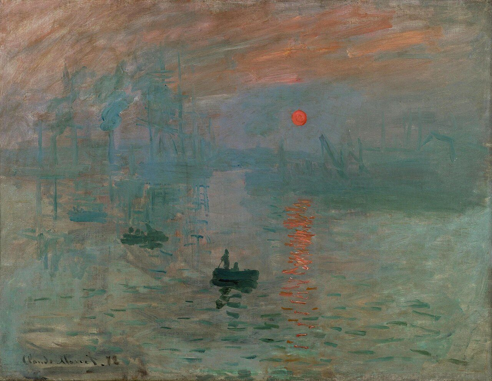
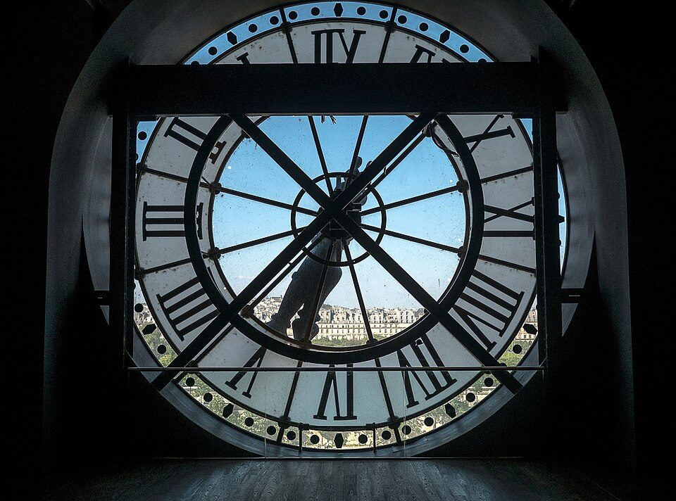
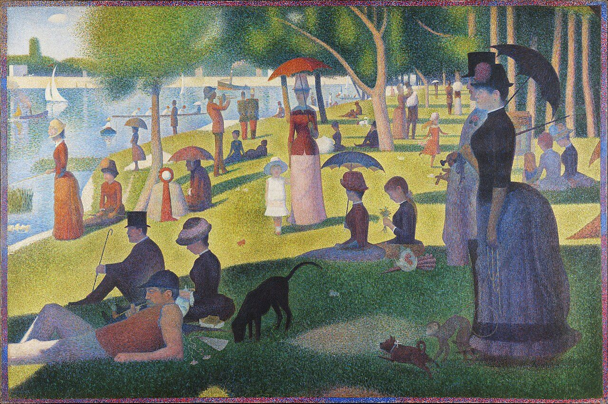
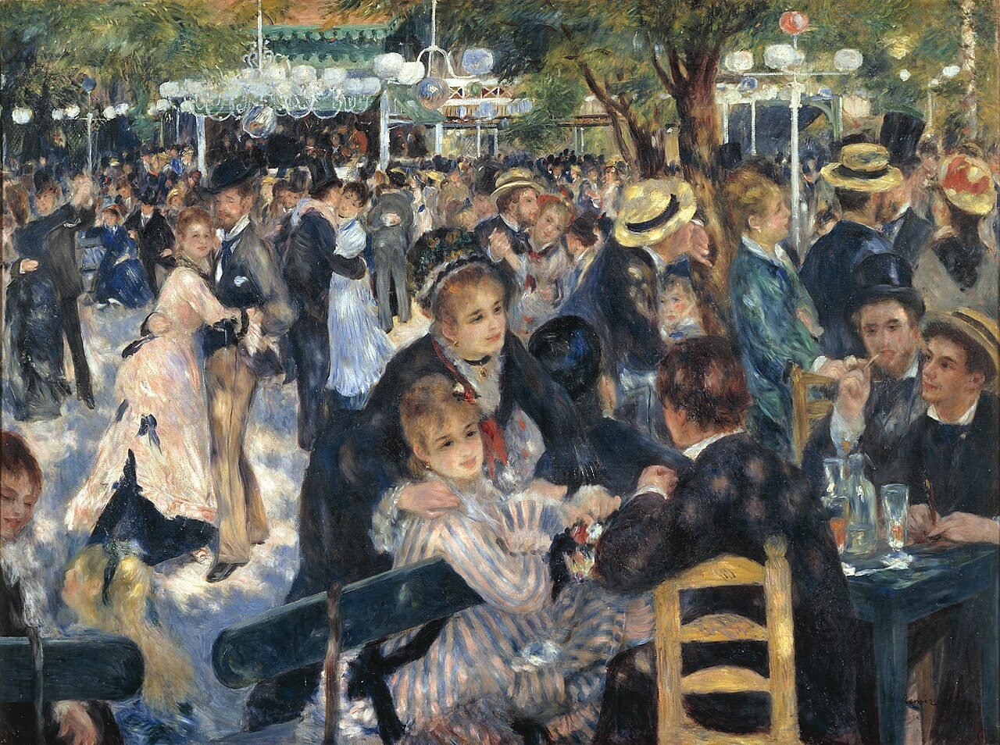

Quatre constructions, une règle d'or
Une phrase hypothétique a deux parties : la condition, introduite par si, et la conséquence. Le temps de la condition détermine le temps de la conséquence. Una frase ipotetica ha due parti: la condizione, introdotta da si, e la conseguenza. Il tempo della condizione determina il tempo della conseguenza.
Possible · Possibile
Imaginaire · Immaginaria
Passé → passé · Passato → passato
Passé → présent · Passato → presente
La condition peut se placer au début ou à la fin : Si j'ai le temps, je viendrai = Je viendrai si j'ai le temps. Devant il et ils, si devient s' : s'il, s'ils. La condizione può stare all'inizio o alla fine della frase. Davanti a il e ils, si diventa s': s'il, s'ils (ma si elle, si on).
Chaque point est suivi d'exercices corrigés immédiatement. Les erreurs apparaissent dans le cadre « À revoir », et tous les corrigés sont à la fin. Ogni punto è seguito da esercizi corretti immediatamente. Gli errori compaiono nel riquadro « À revoir » e tutte le soluzioni si trovano alla fine.
Si + présentL'ipotesi possibile o reale
La condition est réelle ou possible. La conséquence dépend du sens. La condizione è reale o possibile. Il tempo della conseguenza dipende dal senso.
Si + imparfaitL'ipotesi immaginaria o poco probabile
La situation est imaginaire ou peu probable, dans le présent ou le futur. On l'utilise aussi pour donner un conseil poli : si j'étais vous… La situazione è immaginaria o poco probabile, nel presente o nel futuro. Si usa anche per dare un consiglio cortese: si j'étais vous… (se fossi in Lei…).
L'imparfait
radical de nous au présent + -ais, -ais, -ait, -ions, -iez, -aientnous lis
exception : être → j'étais Imperfetto: radice di nous al presente + desinenze. Eccezione: être → ét-.
Le conditionnel présent
radical du futur + -ais, -ais, -ait, -ions, -iez, -aientvisiter → je visiterais
prendre → je prendrais Condizionale presente: radice del futuro + desinenze dell'imperfetto.

Si + plus-que-parfaitL'ipotesi irreale nel passato
La condition ne s'est pas réalisée dans le passé, et la conséquence est passée elle aussi. On exprime un regret ou un reproche. La condizione non si è realizzata nel passato e anche la conseguenza è passata. Si esprime un rimpianto o un rimprovero.
Le plus-que-parfait
avoir ou être à l'imparfait + participe passéj'avais lu · nous étions partis Trapassato prossimo: avoir o être all'imperfetto + participio passato.
Le conditionnel passé
avoir ou être au conditionnel présent + participe passéj'aurais lu · nous serions partis Condizionale passato: avoir o être al condizionale presente + participio passato.
Si + plus-que-parfait, conséquence présenteCondizione passata, conseguenza presente
La condition concerne le passé, mais la conséquence concerne le présent. Des mots comme aujourd'hui, maintenant, en ce moment le signalent souvent. La condizione riguarda il passato, ma la conseguenza riguarda il presente. Parole come aujourd'hui, maintenant, en ce moment spesso lo segnalano.
Conséquence passée (3)
Si j'avais pris ce vol, j'aurais visité le Prado hier.Se avessi preso quel volo, ieri avrei visitato il Prado.Conséquence présente (4)
Si j'avais pris ce vol, je serais au Prado en ce moment.Se avessi preso quel volo, in questo momento sarei al Prado.
Comment choisir ? Come scegliere?
Reconnaître et construireRiconoscere e costruire
BilanVerifica finale

À l'oral : et si… ?
All'orale: e se…?Répondez à voix haute, par des phrases complètes. Le type d'hypothèse à utiliser est indiqué sous chaque question. Un exemple de réponse est proposé, à consulter après avoir parlé. Rispondete ad alta voce, con frasi complete. Il tipo di ipotesi da usare è indicato sotto ogni domanda. Un esempio di risposta è proposto, da consultare dopo aver parlato.
1Questions personnelles · Domande personali
Voir un exemple de réponse · Vedere un esempio di risposta
Si je vais à Paris le mois prochain, je visiterai d'abord le musée d'Orsay, puis je me promènerai sur les quais. Se andrò a Parigi il mese prossimo, visiterò prima il Musée d'Orsay, poi passeggerò lungo i quais.
Voir un exemple de réponse · Vedere un esempio di risposta
Si un client me pose cette question, je lui demande d'abord ses objectifs. S'il veut de la sécurité, je lui conseille de diversifier. Se un cliente mi fa questa domanda, gli chiedo innanzitutto i suoi obiettivi. Se desidera sicurezza, gli consiglio di diversificare.
Voir un exemple de réponse · Vedere un esempio di risposta
Si je pouvais dîner avec un écrivain français, je choisirais Victor Hugo : je lui parlerais de Paris et de « Notre-Dame de Paris ». Se potessi cenare con uno scrittore francese, sceglierei Victor Hugo: gli parlerei di Parigi e di « Notre-Dame de Paris ».
Voir un exemple de réponse · Vedere un esempio di risposta
Si j'habitais à Madrid, j'irais au Prado le matin et je me promènerais dans le parc du Retiro l'après-midi. Se abitassi a Madrid, andrei al Prado la mattina e passeggerei nel parco del Retiro il pomeriggio.
Voir un exemple de réponse · Vedere un esempio di risposta
Si je pouvais emporter un seul tableau, je prendrais « La Naissance de Vénus » de Botticelli. Se potessi portare a casa un solo quadro, prenderei « La nascita di Venere » di Botticelli.
Voir un exemple de réponse · Vedere un esempio di risposta
Si j'avais vécu à Florence au temps des Médicis, j'aurais voulu rencontrer Léonard de Vinci. Se fossi vissuto a Firenze al tempo dei Medici, avrei voluto incontrare Leonardo da Vinci.
Voir un exemple de réponse · Vedere un esempio di risposta
Si je n'avais pas choisi la finance, j'aurais été libraire ou guide de musée. Se non avessi scelto la finanza, sarei stato libraio o guida museale.
Voir un exemple de réponse · Vedere un esempio di risposta
Si j'avais appris le français dans mon enfance, je le parlerais couramment aujourd'hui et je lirais Proust sans dictionnaire. Se avessi imparato il francese da bambino, oggi lo parlerei correntemente e leggerei Proust senza dizionario.
2Jeu de rôle : un projet à Paris · Gioco di ruolo: un progetto a Parigi
Un client souhaite acheter un petit appartement à Paris pour y passer ses week-ends et visiter les musées. Le conseiller financier l'aide à réfléchir. Jouez la scène avec votre partenaire, puis échangez les rôles. Un cliente desidera acquistare un piccolo appartamento a Parigi per trascorrervi i fine settimana e visitare i musei. Il consulente finanziario lo aiuta a riflettere. Recitate la scena con il vostro interlocutore, poi scambiatevi i ruoli.
Rôle A · Le conseiller financier
- Expliquez ce qui se passera si le client achète cette année. (type 1)Spiegate che cosa succederà se il cliente acquista quest'anno.
- Donnez un conseil : « Si vous voulez…, commencez par… ». (type 1, impératif)Date un consiglio con l'imperativo.
- Proposez une autre solution : « Si vous louiez…, vous pourriez… ». (type 2)Proponete un'altra soluzione.
- Rappelez une occasion manquée. (type 3)Ricordate un'occasione mancata.
Rôle B · Le client
- Décrivez votre rêve : « Si j'avais un appartement à Paris, je… ». (type 2)Descrivete il vostro sogno.
- Exprimez un regret : « Si j'avais acheté il y a dix ans, … ». (type 3)Esprimete un rimpianto.
- Parlez des conséquences aujourd'hui : « …, je serais déjà… ». (type 4)Parlate delle conseguenze oggi.
- Posez une question au conseiller : « Si les prix baissent, … ? ». (type 1)Fate una domanda al consulente.
3Entrez dans le tableau · Entrate nel quadro

Imaginez que vous êtes à Montmartre en 1876. Parlez pendant deux minutes en utilisant les quatre constructions. Immaginate di trovarvi a Montmartre nel 1876. Parlate per due minuti usando le quattro costruzioni.
Cochez les constructions que vous avez utilisées. Spuntate le costruzioni che avete usato.
À revoir
Da rivedere: la vostra risposta, la risposta corretta, il perché e la regola da ricordare.Corrigés Soluzioni
Exercice 1 · Présent, futur ou impératif ?
- S'il fait beau dimanche, nous ferons une promenade le long de l'Arno.Se domenica farà bel tempo, faremo una passeggiata lungo l'Arno.
- Si vous passez par Paris, visitez le musée de l'Orangerie !Se passate da Parigi, visitate il Musée de l'Orangerie!
- Si on mélange du bleu et du jaune, on obtient du vert.Se si mescolano il blu e il giallo, si ottiene il verde.
- Si le marché baisse demain, je rassurerai mes clients.Se domani il mercato scenderà, rassicurerò i miei clienti.
- Si tu aimes Zola, lis « L'Œuvre » : c'est un roman sur la peinture.Se ti piace Zola, leggi « L'opera »: è un romanzo sulla pittura.
- Si j'ai un week-end libre en mai, j'irai à Madrid.Se a maggio avrò un fine settimana libero, andrò a Madrid.
- Si les Offices sont fermés lundi, nous visiterons le jardin de Boboli.Se lunedì gli Uffizi saranno chiusi, visiteremo il Giardino di Boboli.
Exercice 2 · Conjuguer : si + présent
- Si tu viens à Florence en mai, je t'emmènerai aux Offices.Se verrai a Firenze a maggio, ti porterò agli Uffizi.
- S'il pleut demain, nous resterons à la bibliothèque.Se domani pioverà, resteremo in biblioteca.
- Si vous avez des questions sur votre contrat, appelez-moi.Se ha domande sul Suo contratto, mi chiami.
- Si nous partons tôt, nous arriverons à Sienne avant midi.Se partiamo presto, arriveremo a Siena prima di mezzogiorno.
- Si tu passes par Madrid, va voir « Guernica » au musée Reina Sofía.Se passi da Madrid, va' a vedere « Guernica » al Museo Reina Sofía.
- Si les taux augmentent, les crédits coûteront plus cher.Se i tassi aumenteranno, i prestiti costeranno di più.
Exercice 3 · Si + imparfait, conditionnel présent
- Si j'avais plus de vacances, je passerais un mois à Paris.Se avessi più ferie, passerei un mese a Parigi.
- Si nous habitions à Madrid, nous irions au Prado tous les dimanches.Se abitassimo a Madrid, andremmo al Prado tutte le domeniche.
- Si tu étais libre ce week-end, tu viendrais à Lucques avec nous ?Se questo fine settimana fossi libero, verresti a Lucca con noi?
- Si je gagnais au loto, j'habiterais près du Louvre.Se vincessi alla lotteria, abiterei vicino al Louvre.
- S'il faisait moins chaud en août, je visiterais Florence plus souvent.Se ad agosto facesse meno caldo, visiterei Firenze più spesso.
- Si vous pouviez rencontrer un écrivain, lequel choisiriez-vous ?Se poteste incontrare uno scrittore, quale scegliereste?
- Si mes clients lisaient davantage la presse économique, ils seraient moins inquiets.Se i miei clienti leggessero di più la stampa economica, sarebbero meno preoccupati.
- Si j'étais vous, je diversifierais ce portefeuille.Se fossi in Lei, diversificherei questo portafoglio.
Exercice 4 · Du projet au rêve
- Si j'ai le temps, je visiterai le Louvre.Se avessi tempo, visiterei il Louvre.
- Si nous partons en avril, nous verrons Madrid sous le soleil.Se partissimo ad aprile, vedremmo Madrid sotto il sole.
- Si tu lis ce roman, tu comprendras la Commune de Paris.Se leggessi questo romanzo, capiresti la Comune di Parigi.
- S'il investit maintenant, il pourra acheter une maison à Lucques.Se investisse adesso, potrebbe comprare una casa a Lucca.
- Si vous venez à Paris, vous irez à Orsay.Se veniste a Parigi, andreste al Musée d'Orsay.
- Si elle a assez d'argent, elle fera le tour de la France.Se avesse abbastanza denaro, farebbe il giro della Francia.
Exercice 5 · Les regrets : si + plus-que-parfait
- Si j'avais réservé plus tôt, j'aurais vu l'exposition Monet.Se avessi prenotato prima, avrei visto la mostra di Monet.
- Si nous étions partis à l'heure, nous n'aurions pas raté le train pour Paris.Se fossimo partiti in orario, non avremmo perso il treno per Parigi.
- Si tu avais investi en 2015, tu aurais gagné beaucoup d'argent.Se avessi investito nel 2015, avresti guadagnato molto denaro.
- S'il avait lu le contrat, il ne l'aurait pas signé.Se avesse letto il contratto, non l'avrebbe firmato.
- Si vous étiez venus à Florence en avril, vous auriez vu les jardins de Boboli en fleurs.Se foste venuti a Firenze in aprile, avreste visto il Giardino di Boboli in fiore.
- Si elle avait su que le musée était fermé, elle serait restée à l'hôtel.Se avesse saputo che il museo era chiuso, sarebbe rimasta in albergo.
- Si nous avions pris le TGV, nous serions arrivés plus tôt à Lyon.Se avessimo preso il TGV, saremmo arrivati prima a Lione.
Exercice 6 · Hier ou aujourd'hui ?
- Si j'avais étudié l'espagnol au lycée, je le parlerais couramment aujourd'hui.Se avessi studiato lo spagnolo al liceo, oggi lo parlerei correntemente.
- Si tu avais pris ton parapluie ce matin, tu ne serais pas trempé maintenant.Se stamattina avessi preso l'ombrello, adesso non saresti fradicio.
- Si nous étions partis plus tôt, nous n'aurions pas manqué le début du concert hier soir.Se fossimo partiti prima, ieri sera non avremmo perso l'inizio del concerto.
- S'il avait suivi mes conseils l'an dernier, il serait plus riche aujourd'hui.Se l'anno scorso avesse seguito i miei consigli, oggi sarebbe più ricco.
- Si je n'avais pas lu Proust à vingt ans, j'aimerais moins la France aujourd'hui.Se non avessi letto Proust a vent'anni, oggi amerei meno la Francia.
- Si les Médicis n'avaient pas protégé les artistes, Florence serait aujourd'hui une ville différente.Se i Medici non avessero protetto gli artisti, oggi Firenze sarebbe una città diversa.
- Si j'avais vu l'annonce, j'aurais participé à la conférence la semaine dernière.Se avessi visto l'annuncio, la settimana scorsa avrei partecipato alla conferenza.
Exercice 7 · Quelle hypothèse ?
- Si tu viens à Paris, je t'emmènerai à Montmartre. → type 1Se verrai a Parigi, ti porterò a Montmartre.
- Si j'étais peintre, je peindrais la Seine au lever du soleil. → type 2Se fossi pittore, dipingerei la Senna all'alba.
- Si Napoléon avait gagné à Waterloo, l'histoire de l'Europe aurait été différente. → type 3Se Napoleone avesse vinto a Waterloo, la storia dell'Europa sarebbe stata diversa.
- Si j'avais acheté cet appartement en 2010, je serais propriétaire aujourd'hui. → type 4Se avessi comprato quell'appartamento nel 2010, oggi sarei proprietario.
- Si le client signe aujourd'hui, nous ouvrirons le compte demain. → type 1Se il cliente firma oggi, apriremo il conto domani.
- Si nous avions plus de place, nous aurions une grande bibliothèque. → type 2Se avessimo più spazio, avremmo una grande libreria.
- Si tu avais lu la critique, tu n'aurais pas choisi ce film. → type 3Se avessi letto la recensione, non avresti scelto questo film.
- Si vous aviez pris le train de nuit, vous seriez déjà à Madrid. → type 4Se aveste preso il treno notturno, sareste già a Madrid.
Exercice 8 · Construire la phrase
- Si tu passes par Paris, appelle-moi.Se passi da Parigi, chiamami.
- Si j'avais plus de temps, je lirais Balzac.Se avessi più tempo, leggerei Balzac.
- Si nous avions réservé, nous aurions vu la Joconde.Se avessimo prenotato, avremmo visto la Gioconda.
- Si j'avais appris l'espagnol, je vivrais à Madrid.Se avessi imparato lo spagnolo, vivrei a Madrid.
Exercice 9 · Bilan : un dimanche à Paris
- Si tu vas un jour à Paris, commence par le musée d'Orsay.Se un giorno andrai a Parigi, comincia dal Musée d'Orsay.
- Si j'avais su que la file était si longue, j'aurais acheté mon billet en ligne.Se avessi saputo che la fila era così lunga, avrei comprato il biglietto online.
- Si le temps le permettait, nous déjeunerions au jardin du Luxembourg.Se il tempo lo permettesse, pranzeremmo ai Giardini del Lussemburgo.
- Si j'avais grandi à Paris, je connaîtrais tous les cafés du Quartier latin aujourd'hui.Se fossi cresciuto a Parigi, oggi conoscerei tutti i caffè del Quartiere Latino.
- S'il y avait moins de monde, on verrait mieux les tableaux.Se ci fosse meno gente, si vedrebbero meglio i quadri.
- Si vous aimez les impressionnistes, vous irez à l'Orangerie.Se amate gli impressionisti, andrete all'Orangerie.
- Si nous n'avions pas manqué le dernier métro, nous ne serions pas rentrés à pied.Se non avessimo perso l'ultima metropolitana, non saremmo tornati a piedi.
- Si j'étais parisien, je flânerais sur les quais tous les soirs.Se fossi parigino, passeggerei sui lungosenna tutte le sere.